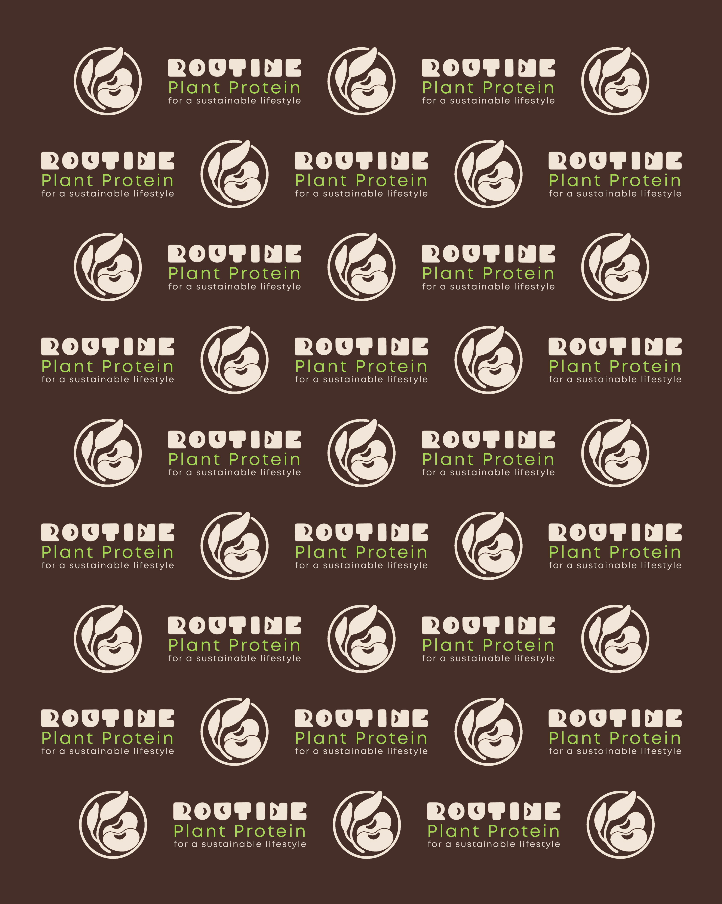

FigmaDigital DesignAbout Me.
I’m a Digital Designer currently pursuing the Digital Design & Creative Strategy program at UC San Diego. Through freelance projects, agency experience, and my current internship, I’ve gained hands-on experience in website design, email marketing, social media, UI design, and digital marketing assets. I enjoy transforming ideas into engaging, user-centered digital experiences that combine creativity with strategy. I’m passionate about continuous learning and am currently seeking a junior Digital Designer opportunity with a creative agency where I can contribute to meaningful projects while continuing to grow professionally.
Work Experience
Social Media InternStudio Six Socials
May 2026 – Present
May 2026 – Present
- Created social media graphics, carousels, Stories, and other marketing assets for retail brands using Canva.
- Edited short-form videos and Instagram Reels using CapCut.
- Designed responsive email campaigns in Figma and prepared assets for deployment in Mailchimp.
Digital Designer (Freelance)Eastopian Design Studio
Nov 2023 – Present
Nov 2023 – Present
- Designed responsive websites using Shopify, Squarespace, and Wix.
- Created digital marketing assets and social media content for multiple clients.
- Managed projects from concept through final delivery.
Web Designer | Content CreatorPioneesta Fashion Company
Jun 2023 – Sep 2024
Jun 2023 – Sep 2024
- Designed and built a Shopify e-commerce website.
- Created promotional email campaigns and social media content.
UI Designer (Junior)Digital Ink Agency
Mar 2023 – Nov 2023
Mar 2023 – Nov 2023
- Designed user interfaces in Figma, including sitemaps, wireframes and prototypes.
Education
Digital Design and Creative Strategy
University of California San Diego (UCSD)
2026 – Present
User Experience Design
Google Certificate
2022 – 2023
TOOLS & SKILLS
 Adobe Creative CloudGraphic Design
Adobe Creative CloudGraphic Design Canva / CapCutSocial Media Content Design
Canva / CapCutSocial Media Content Design